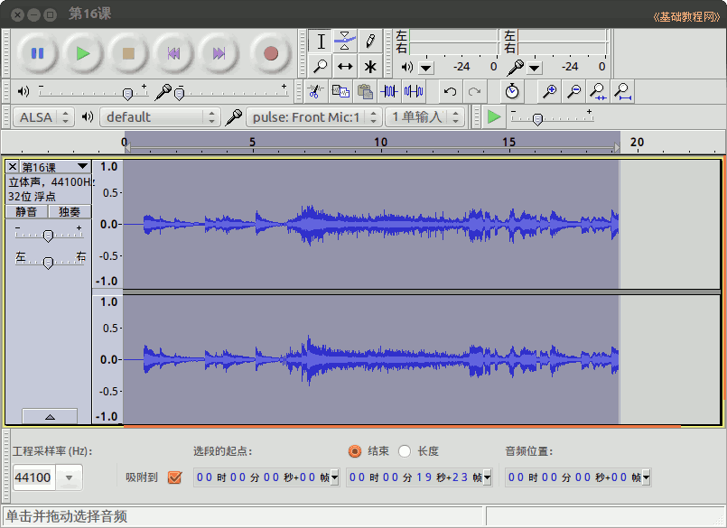

2015-2016 第一学期七年级电子表格和音视频编辑教学设计
作者：TeliuTe 来源：基础教程网
十六、 返回目录 下一课
（一）教学设计
1、学习目标：
2、注意事项：绕过弯来，既不要跳也不要落，一楼过了二楼
3、教学过程：
1）教师准备学案和板书；
2）学生整队进入，开机抄黑板上笔记；
3）教师讲解板书演示操作；
4）学生打指法、日志、完成操作；
5）教师打勾记录学生指法成绩，检查日志和操作；
注：学生抄完笔记就开始打指法、日志，老师讲完后再继续完成；
操作图示：

（二）板书设计(学生笔记)、课后记
16学会裁剪音乐
1.下载音乐喜欢你
2.打开音频编辑器打开音乐
3.播放到第一句，暂停
4.编辑，删除，裁剪，导出
第16课 学会剪裁音乐
1.校园网，素材，下载 喜欢你-G.
2.主按钮，搜索，打开 auda音频编辑器
3.打开“喜欢你”，播放一句暂停
4.点“编辑，删除，剪裁”，文件，导出第16课
（范例）
--
2016年05月30日 星期一 13:13
--
两周没上，学生有点不知所措，严格要求
排队进，抄笔记，不许吵，把开始的再过一下，免得乱糟糟
--
把步骤强调一下，这节课要学裁剪音乐，切出一句来
先到校园网里下载到音乐文件夹，一会好找
--
audacity的单词不好读，不是英语老师不用管那么多
打开以后选中，要停止了才能裁剪，用导出命令
--
项目文件没说保存，导出了就可以了
wav文件也是，默认是wav文件
--
选择那一块有点问题，不会选中
看下面的时间长度，19秒左右，音量高低怎么看下节课的
--
耳机带的不多，占课占的学生也乱了，之前有带
后面的情况还不知道怎么样，看情况来定
--
返回目录 下一课
本教程由86团学校TeliuTe制作|著作权所有
基础教程网：http://teliute.org/
美丽的校园……
转载和引用本站内容，请保留作者和本站链接。